Be My Baby
Details
| label | orig_file | md5 | disc | track | duration_sec | duration_fmt | loudness | loudness_left | loudness_right | loudness_balance | rms | rms_left | rms_right | rms_balance | lr_corr | spectral_centroid |
|---|---|---|---|---|---|---|---|---|---|---|---|---|---|---|---|---|
| DITB | 16 Be My Baby (Tiny Tim).flac | 77cb650fefff255f8f10048a95b22d4e | 1 | 16 | 345.08 | 05:45:080 | -18.0319 | -15.6589 | -15.913 | 0.254138 | 0.132364 | 0.156025 | 0.152597 | 0.003428 | 0.519683 | 1635.73 |
| FTR | Track No20.flac | f3a05268adebfb28cdde38b9158c2173 | 6 | 20 | 369.36 | 06:09:360 | -22.4717 | -16.9266 | -19.6026 | 2.67602 | 0.0593101 | 0.101451 | 0.0708988 | 0.0305521 | -0.111429 | 2401 |
| CB | 20 Be my Baby (Tiny Tim Vocal).flac | b5b05cd88b23ae2a5b13ab4df5c23cc2 | 6 | 20 | 371.427 | 06:11:427 | -22.4857 | -16.9513 | -19.6147 | 2.66331 | 0.0591953 | 0.101195 | 0.0706797 | 0.0305158 | -0.110619 | 2399.11 |
Plots
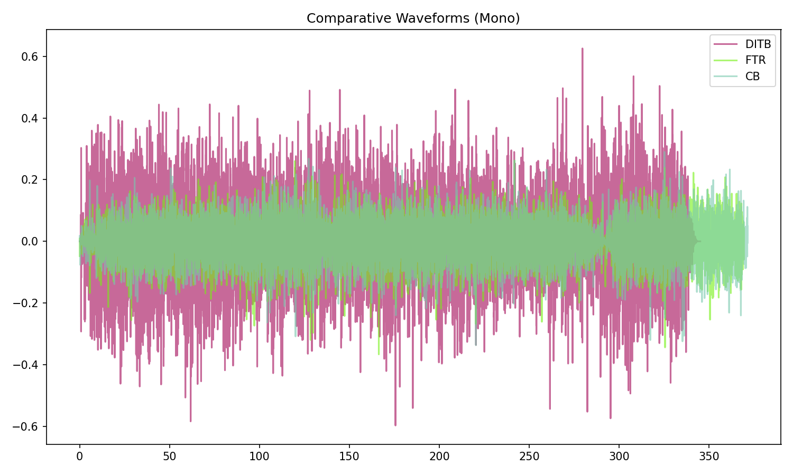
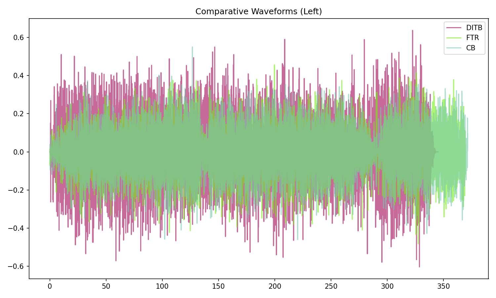
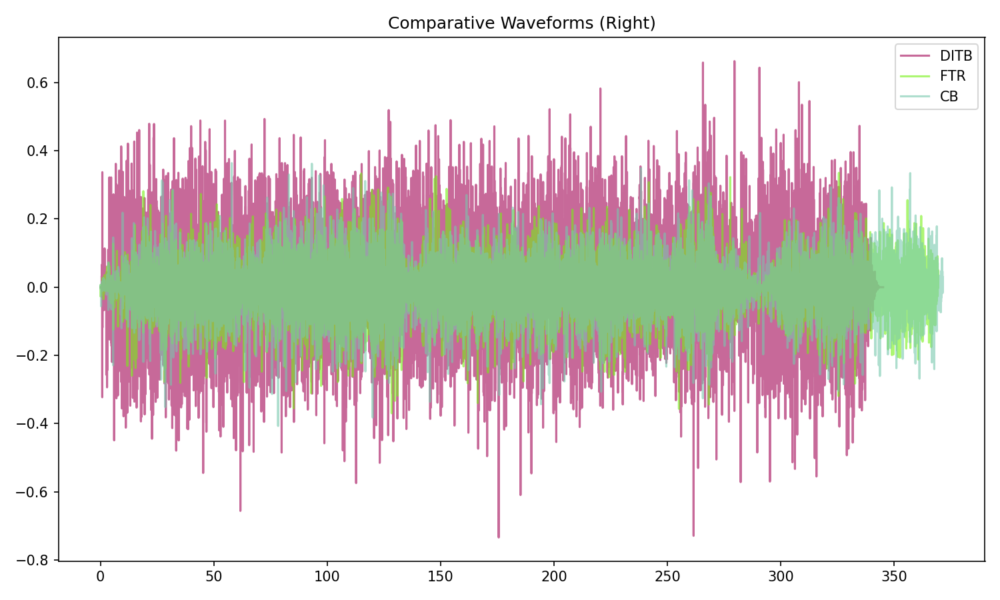
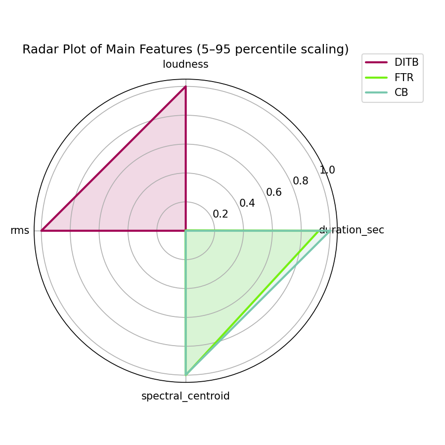
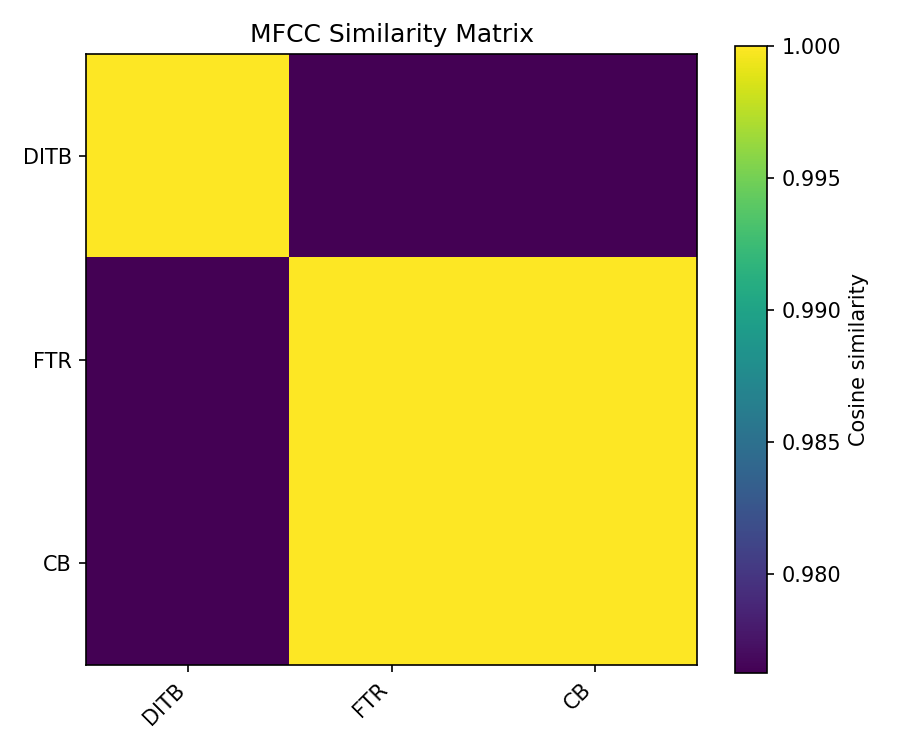
Pitch & Speed Analysis (cents)
Reference version: DITB
| song_label | ref_label | cmp_label | cmp_file | tuning_cents_cmp | tuning_cents_ref | delta_tuning_cents | semitone_shift_vs_ref | chroma_similarity | speed_factor_from_pitch | duration_ratio_ref_over_cmp |
|---|---|---|---|---|---|---|---|---|---|---|
| bmb | DITB | DITB | 16 Be My Baby (Tiny Tim).flac | -26 | -26 | 0 | 0 | 1 | 1 | 1 |
| bmb | DITB | FTR | Track No20.flac | 28 | -26 | 54 | 0 | 0.998649 | 1 | 0.934265 |
| bmb | DITB | CB | 20 Be my Baby (Tiny Tim Vocal).flac | 49 | -26 | 75 | 0 | 0.998557 | 1 | 0.929066 |

Pitch/Speed analysis (reference = DITB)
============================================================
DITB - 16 Be My Baby (Tiny Tim).flac: shift=0 st ; Δtuning=0.0 cents ; speed_from_pitch=1.0000 ; duration_ratio(ref/cmp)=1.0000
FTR - Track No20.flac: shift=0 st ; Δtuning=54.0 cents ; speed_from_pitch=1.0000 ; duration_ratio(ref/cmp)=0.9343
CB - 20 Be my Baby (Tiny Tim Vocal).flac: shift=0 st ; Δtuning=75.0 cents ; speed_from_pitch=1.0000 ; duration_ratio(ref/cmp)=0.9291
Stereo Balance
DITB
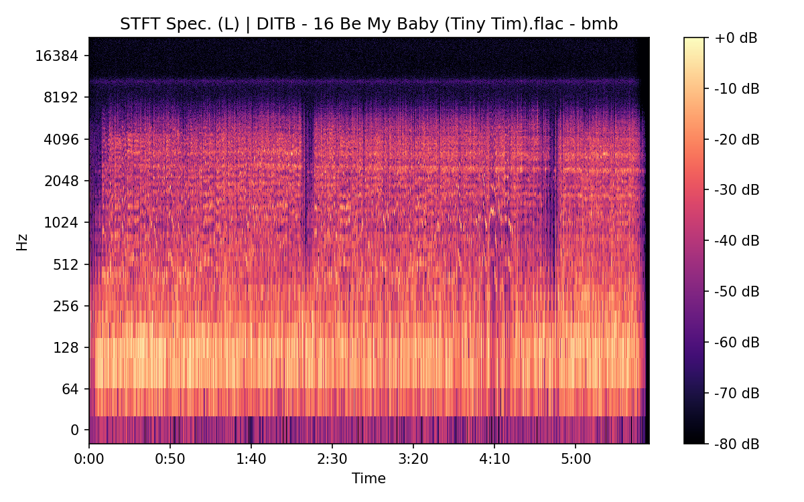

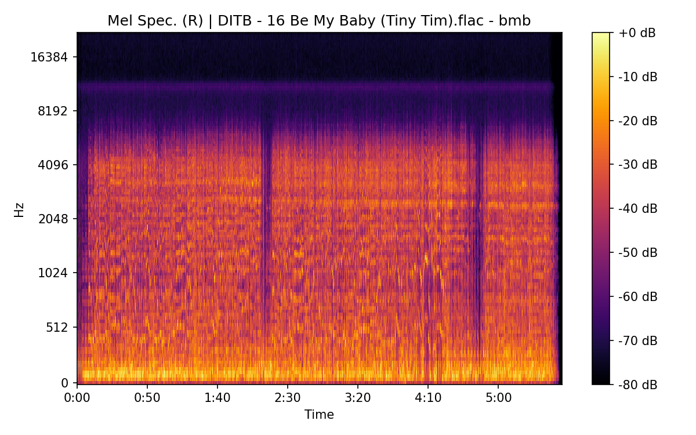
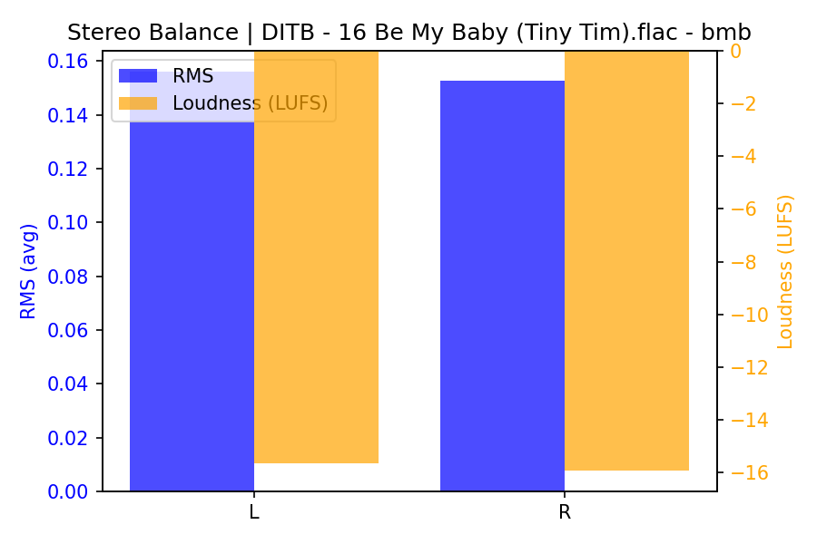
FTR

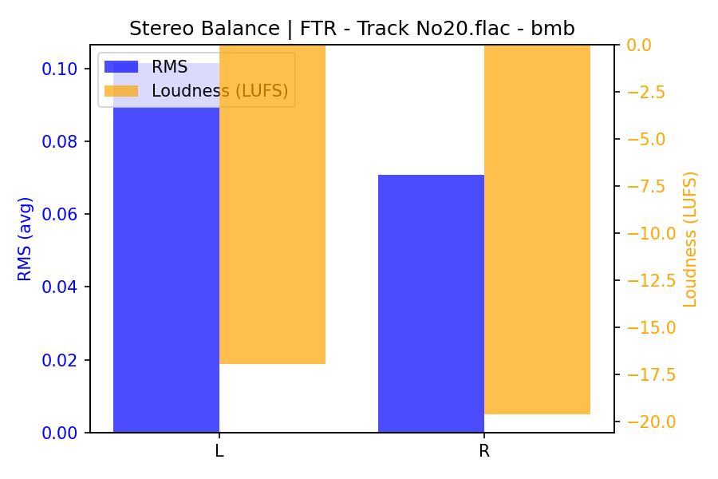
CB
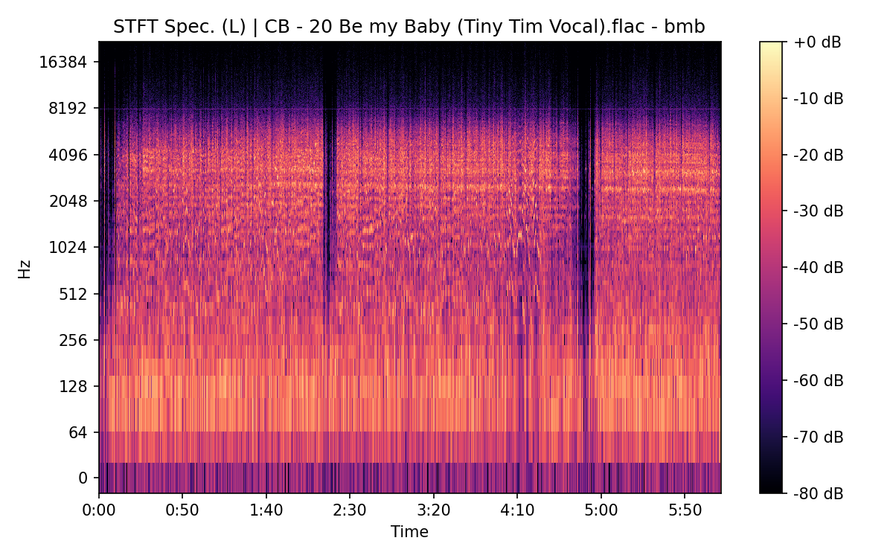
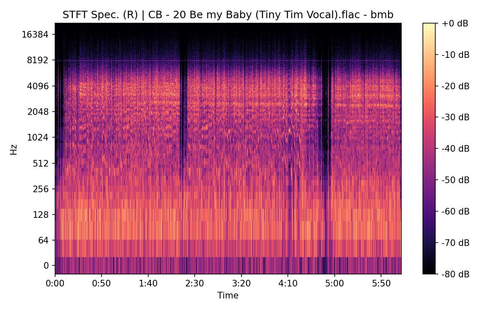
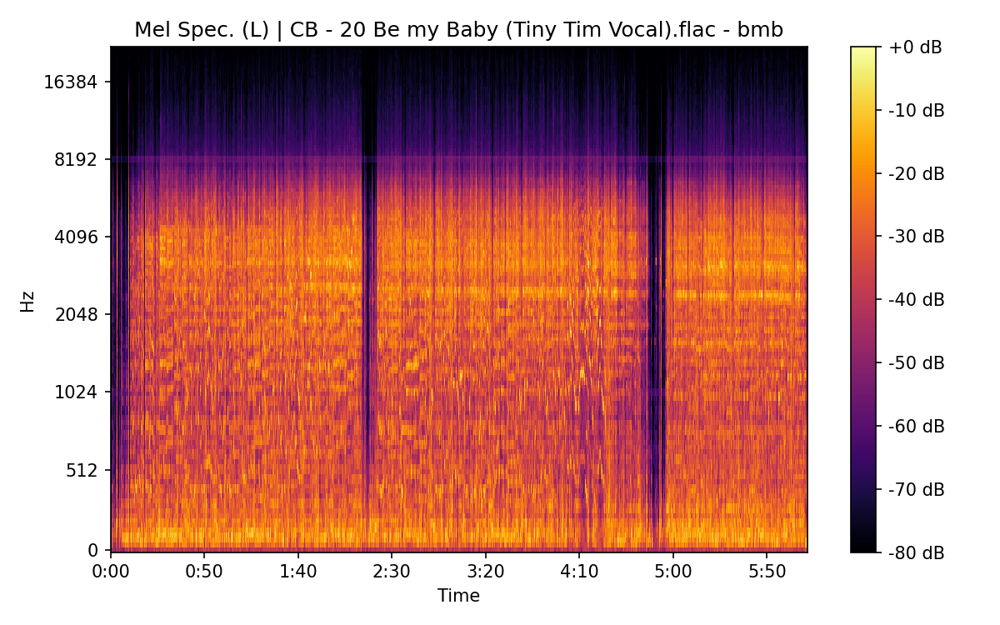
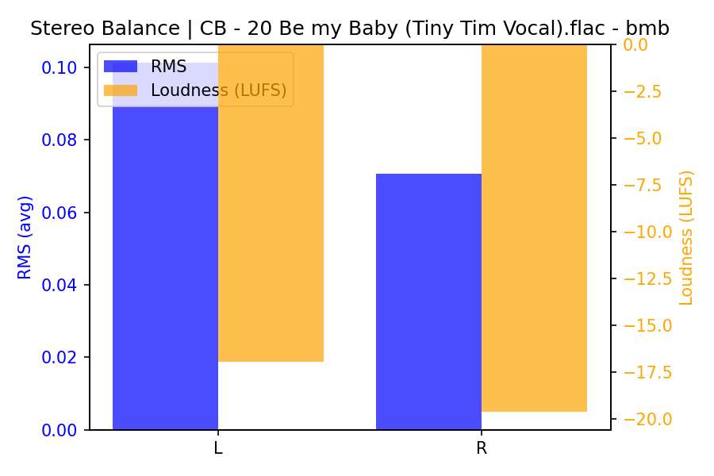
Spectrograms (Mono)
DITB

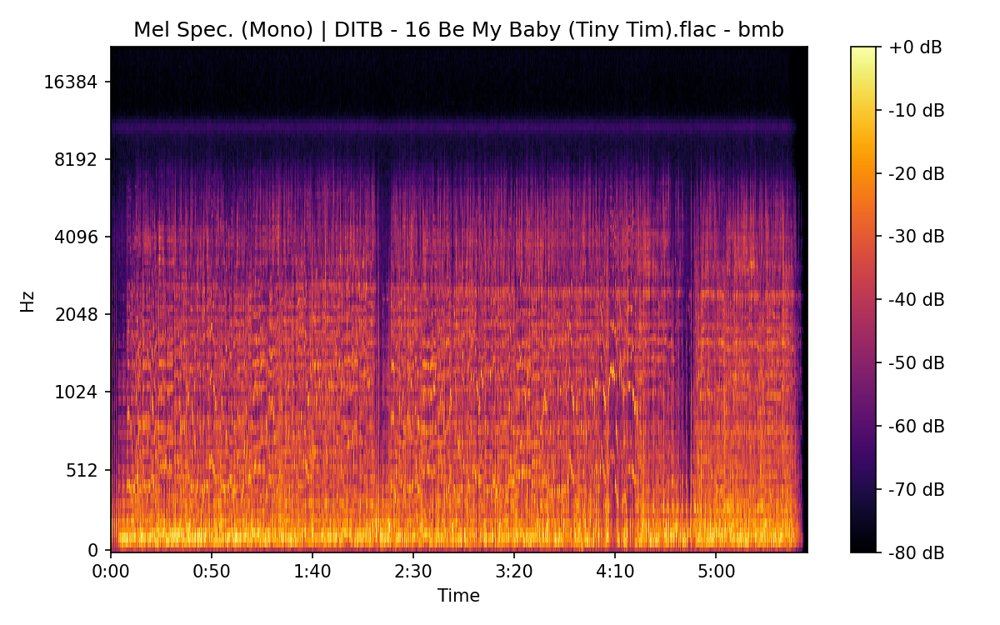
FTR
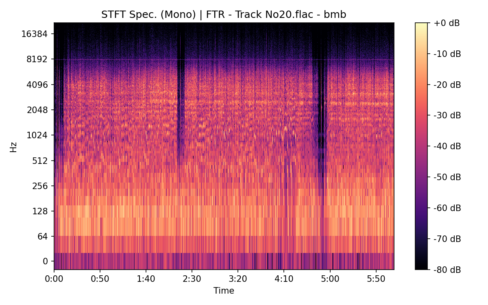
CB
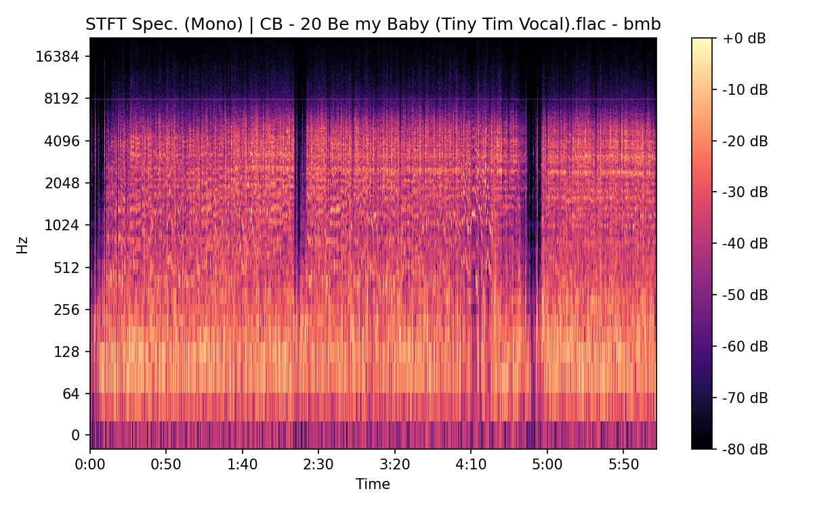